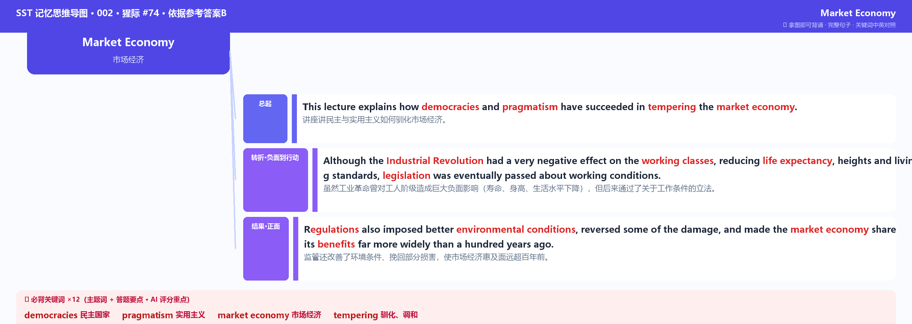

SST 002 · Market Economy · #74
🏷 难度：简单 · 📊 考过 443 次 · 📐 结构：转折对比
先听题目音频并记笔记，再展开下方题目文字版核对，最后背 A/B 答案。
Within most developed countries, notions of pragmatism, notions of the fact that we have democracies, have succeeded in tempering the market economy. In the 19th century, 18th century, the Industrial Revolution had a very negative effect on people, particularly working classes all over the world. We see data where life expectancy was reduced, heights were reduced. We were looking at the medical record. We can see that actually, living standards, much among large fractions of population, actually went down. But eventually, we pass the legislation about working conditions.
And eventually, we circumscribe some of the worst kinds of behavior. We eventually, in the 20th century, we put regulations that imposed better environmental conditions. And so some of the damage was reversed, and that we have made the market economy work in ways that the benefits of the all is far more what we shared in the world a hundred years ago.
五步听音法：
① 听音记笔记（主题 + 2-4 个要点）→ ② 抓重点位置（开头主题 / 转折后 / 强调处 / 结尾）→ ③ 起草总结 → ④ 数字校准（词数 50-70）→ ⑤ 检查（语法 / 拼写 / 时态）
听音时抓住信号词：however/but（转折）、because/thanks to（因果）、firstly/lastly（列举）、in conclusion（总结）。背答案先抓关键词+主谓宾。
必背关键词 ×12（主题词 + 答题要点 · AI 评分重点）：
"democracies / pragmatism / market economy / tempering / Industrial Revolution / working classes / life expectancy / living standards / legislation / regulations / environmental conditions / benefits"
套模板写法：先总起 → 再分点 → 最后总结（快速上手，可打满分）。关键词已黄底高亮。
This lecture talks about how democracies have tempered the market economy. Firstly, the speaker emphasizes that the Industrial Revolution had a negative effect on the working classes, reducing life expectancy and living standards. Also, he mentions that legislation was eventually passed about working conditions. Lastly, regulations improved environmental conditions and made the market economy share its benefits more widely. In conclusion, it now works better than a century ago.
🎧 A 版音频（随答案附上，点击播放 · 读参考答案 A）
框架B = 把原文转写浓缩成概要：不用固定模板、可写多个句子、同样满足 50-70 词、保留原文关键词。要求高分的同学重点练 B。
This lecture explains how democracies and pragmatism have succeeded in tempering the market economy. Although the Industrial Revolution had a very negative effect on the working classes, reducing life expectancy, heights and living standards, legislation was eventually passed about working conditions. Regulations also imposed better environmental conditions, reversed some of the damage, and made the market economy share its benefits far more widely than a hundred years ago.
🎧 B 版音频（随答案附上，点击播放 · 读参考答案 B）

思维导图按参考答案B生成：每个分支是完整句子、标注逻辑关系色块（总起/因果/转折/分述/总结…）、关键词已红色高亮、中文辅助记忆——拿图即可背诵。